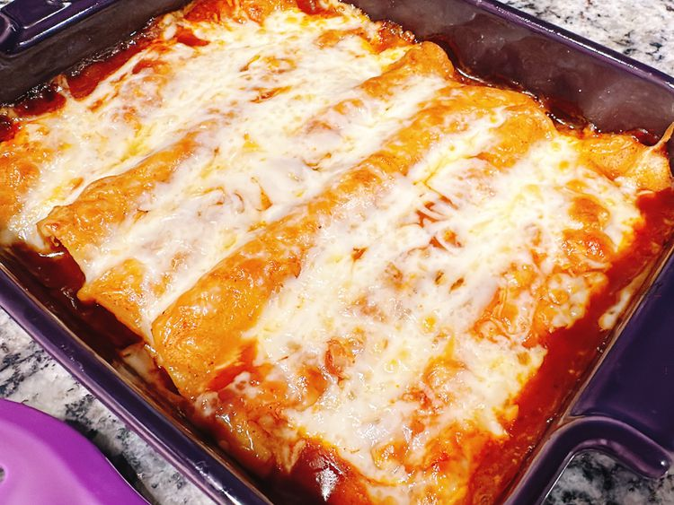

Rotisserrie Chicken Enchiladas

DESCRIPTION
These easy rotisserie chicken enchiladas can be assembled in no time, and are a timesaver for busy weekday nights.
A handful of ingredients, including rotisserie chicken and premade enchilada sauce, save the day!
INGREDIENTS
- Corn Tortillas
- Red enchilada sauce
- Shredded rotisserie chicken
- Dry enchilada seasoning
- Shredded Monterey Jack cheese
STEPS
- Preheat the oven to 375 degrees F
- Quickly fry tortillas in the hot oil
- Pour a thin layer of enchilada sauce into the bottom of a casserole dish
- Place shredded chicken in a bowl, sprinkle enchilada seasoning over chicken; toss to combine
- Bake in the preheated oven for 25 minutes. Turn on the oven’s broiler, remove foil from enchiladas, and broil until cheese is melted and golden, about 5 minutes
Home